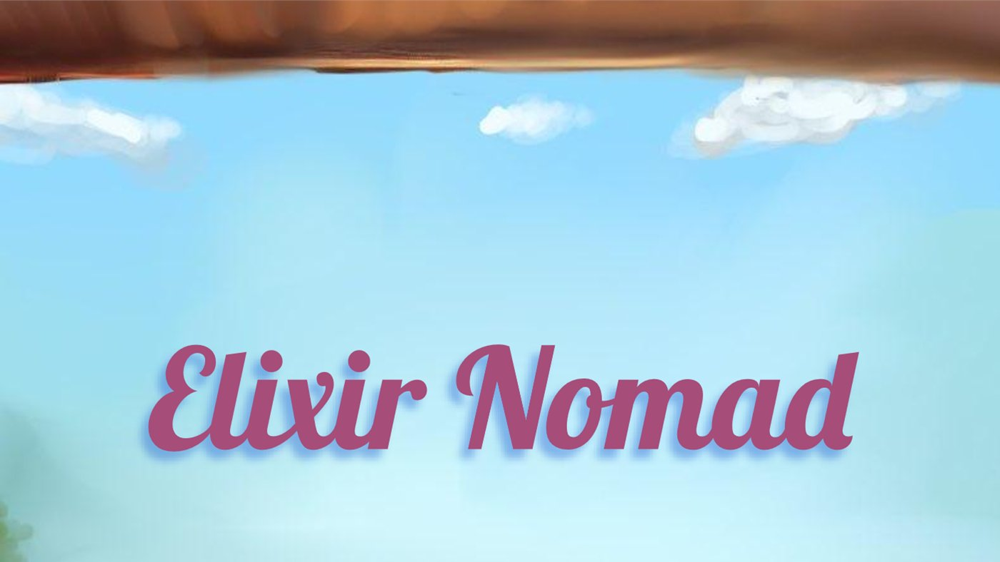
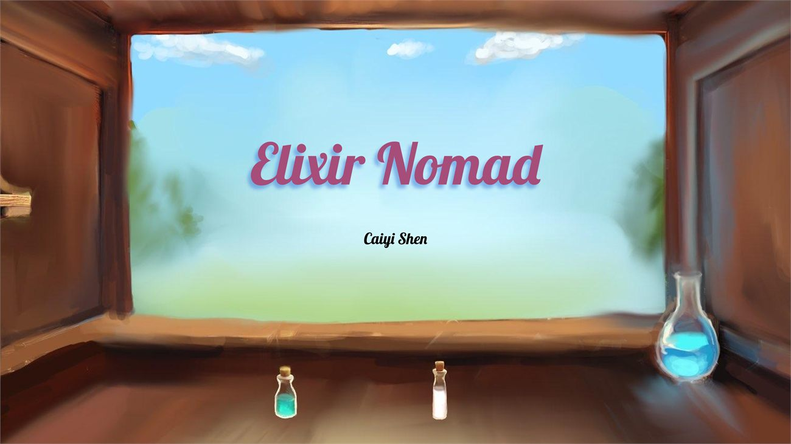
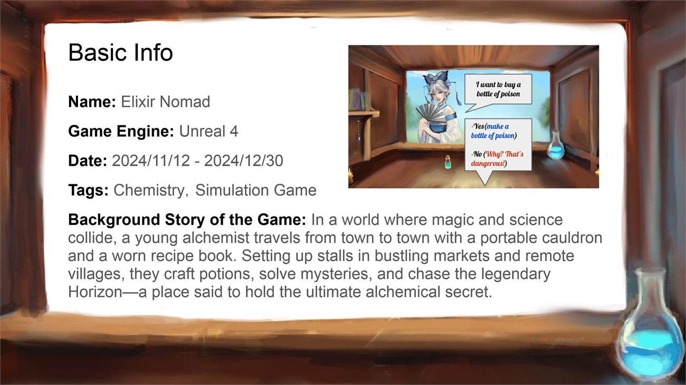
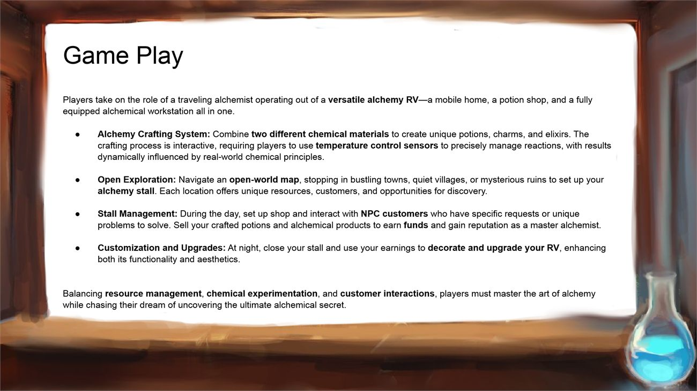
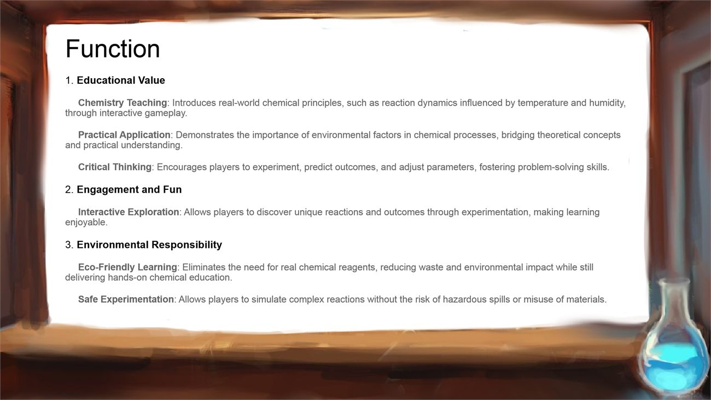
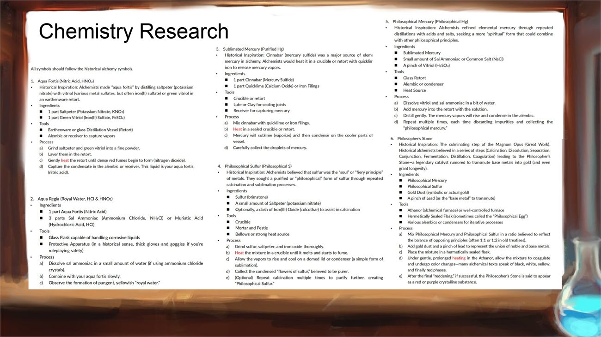
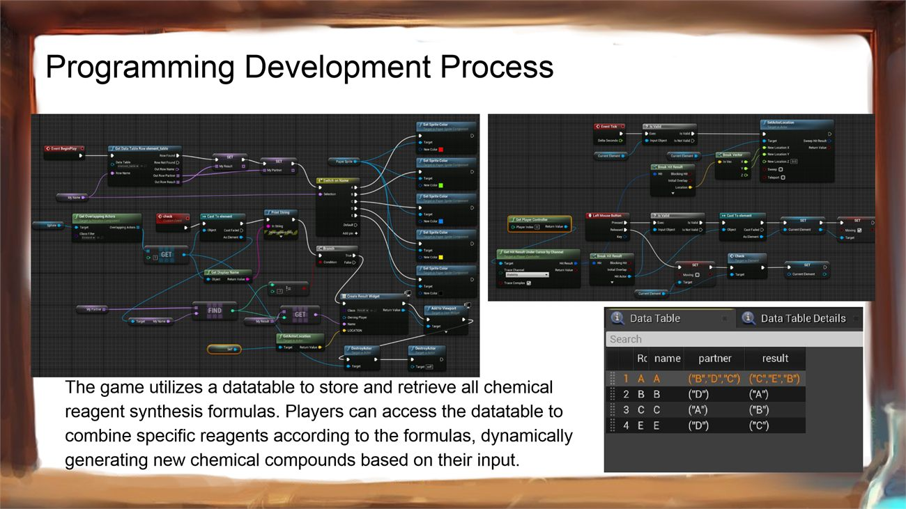
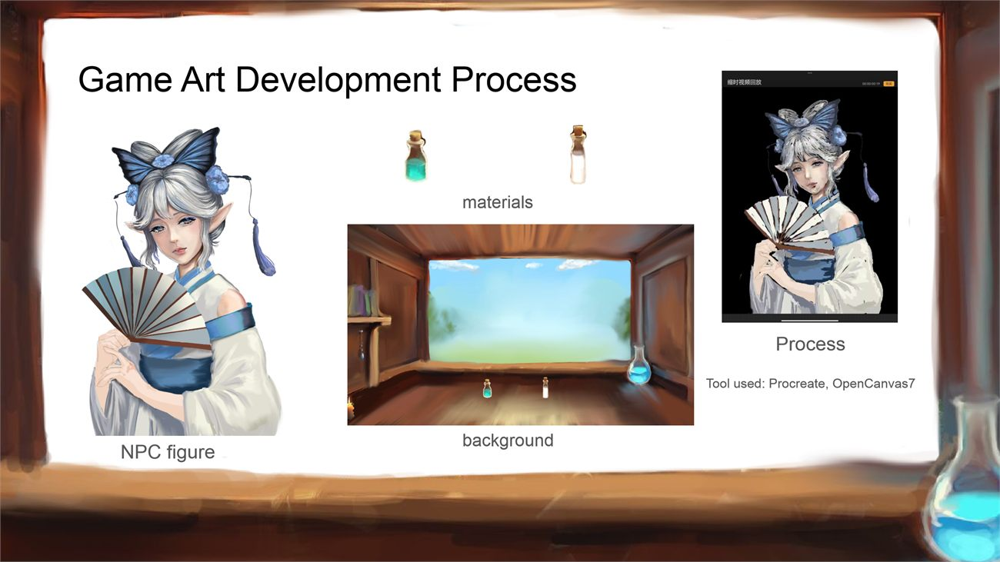
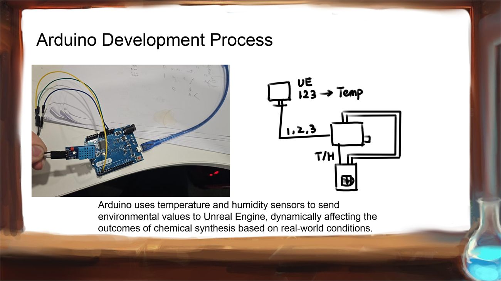

Case Study
Elixir Nomad
A traveling alchemist prototype where potion crafting is driven by reagent combinations, temperature, and a physical sensor input.

Overview
The player runs a mobile potion shop out of an RV: travel, explore, set up a stall, take customer requests, and combine two chemical materials into something worth selling.
The thing that makes it more than a crafting menu is temperature. Reactions behave differently at different temperatures, so the crafting loop connects to real chemistry principles instead of using ingredient names as flavour text.
The strongest angle here is systems and technical prototyping, not final visual polish.
How the crafting system works
A DataTable, not a hand-written recipe list. An Unreal DataTable stores the reagent and synthesis formulas, and compounds are generated from material combinations rather than authored one at a time. That means the space of possible results is a property of the data, so adding a reagent extends the game instead of requiring new content for every pairing.
Real sensors drive the reaction. Arduino temperature and humidity sensors feed environmental values into Unreal, and those values change synthesis outcomes. The prototype is a physical-computing piece as much as a game system: the thing that decides whether your potion works is the actual temperature in the room you are sitting in.
Around that core sit the ordinary running-a-business systems: resource management, customer needs, stall operation, and vehicle and space customization.
Art
I created parts of the character, material, and background art in Procreate and OpenCanvas. The visual work here is deliberately secondary to the systems. It exists to make the prototype legible, not to present a finished look.
Project deck
The full deck: premise, gameplay, educational function, the underlying chemistry research, the Blueprint and DataTable implementation, the art pipeline, and the Arduino build.







